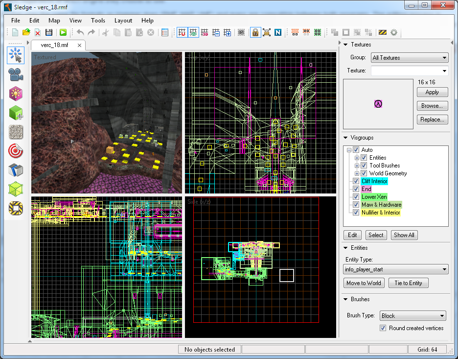
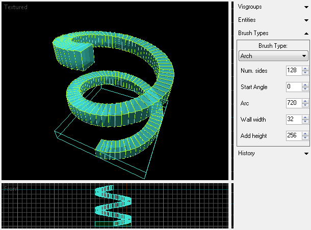
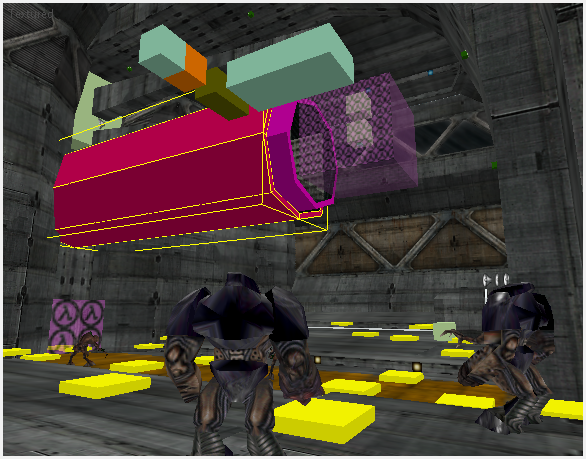
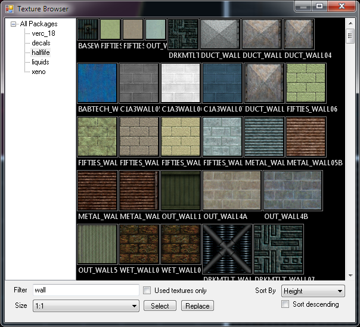
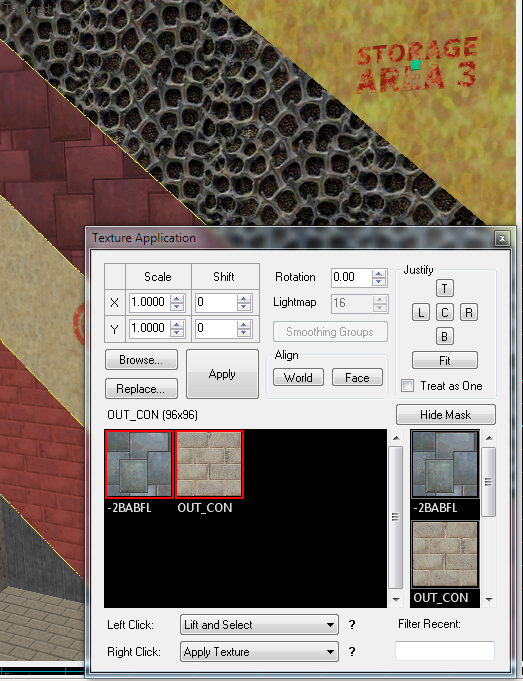

Sledge is currently in public alpha, which means that there are still many changes being made and it will be updated often. Alpha builds may be unstable.
Sledge is a completely free and open-source replacement for Valve's Hammer Editor, with a focus on compatibility with both Goldsource and Source engines. The purpose of Sledge is to offer advanced editing features from later versions of Hammer and other editors and make them available to all users, regardless of which engine they choose to use.
Sledge uses the same file formats as Hammer does (RMF, MAP, VMF) and maps are compatible between both programs. The editing process is almost identical to Hammer, the hotkeys are the same, as well as many of the screen elements and dialogs. Switching to Sledge will not be difficult for users who are familiar with Hammer.

Note that WINE/Mono for Linux and Mac is currently not supported, but may be in the future.



Don't like the colour of the grid lines? Prefer your background colours to be blue? Want to automatically switch to the selection tool after you create a brush? How about changing the hotkeys? Sledge has you covered for all this and more!

Sledge is currently in alpha stage, so it may be unstable and some features are missing. Missing features include:
The current milestone is to fully support Goldsource editing. Once the alpha test is complete, work to add support for Source will begin. Full Source support is expected to be released in version 2.
Many Source editing features will be available in Goldsource as well, such as displacements and instances. These features will convert to Goldsource-compatible brushwork when a map is compiled.
Because Sledge is open source, the possibilities for future expansion are endless. Some popular ideas include the following:
 Download Sledge
Download Sledge